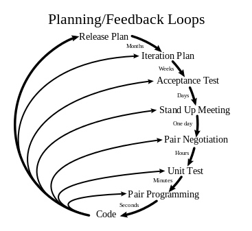

不知道你有没有注意到，走进各个企业，总能看到那么几句振奋人心的标语，其中“一次把事情做对”绝对是个高频词汇。以前每次看到，我都会想：这家企业也太教条了，都什么时代了。对失败这么零容忍，还怎么创新呢。这个时代的主旋律不是从错误中学习，快速响应、快速迭代吗。
然而最近一年的嵌入式领域经历，让我重新反思，“一次把事情做对”不仅是对工作效率的追求，更是对质量控制的严格要求。在嵌入式产品开发领域，这一理念的重要性尤为突出。
与Web系统相比，嵌入式产品有其独特性。它是软硬件的紧密结合体，不易升级，一旦发布，出问题的解决成本异常高昂，后果更为严重。所以“一次把事情做对”就是一个合理且必要的目标了。
但是怎么做到一次把事情做对呢？我们从 4 个原则来聊聊。
不做就不错
在生活中，我们常说“不做就不错”。在工作中，我也要把这个原则送给你，它仍然是真理。说白了就是：没代码，无bug。
我不是说让大家不干活，而是在没搞清楚需求之前，千万别急着动手。你想想，画画草图、写写文档总比直接写代码来得轻松吧？而且成本也低多了。如果错了大不了重画重写，可是写成了代码，那就叫 bug。
你要学会拒绝需求。需求来了，你得想想这需求有价值吗？合理吗？如果对方说不清楚价值，给不出理由，那你就应该拒绝。告诉他不要浪费你的时间和公司的金钱。
你得要求明确的需求。当业务方提出技术规划或者需求时，BA（需求分析师）就要分析清楚这个需求的细节，一句话的需求太模糊，没法干，开发者也要拒绝。这是你的权利。一旦你干了，出了 bug 那就是你的错。
但你可能要问了，有些需求在初期就是模糊的，只能在做的过程中慢慢摸索，那怎么办呢？
记住，不做就不错，不写代码就没 bug！你问问自己，需求是模糊的，可你的代码能模糊吗？你写个模糊的代码让大家看看。计算机只能分清0和1，根本就不会模糊处理。所以即使需求是模糊的，但你写不出模糊的代码。如果你写出了代码，必然是你把模糊的东西变成了确定的东西，那你大概率就写了个bug。
正确的做法是，需求必须明确，不能模糊。如果在产品初期，摸索阶段，那么BA应该提出假设，进行验证。提出假设后，需求就是明确的。我们假设是这种情况，代码就这么开发，先验证，不断迭代就能逐渐找到更好的答案。
这种通过假设来明确需求的方法叫试错，你拿着模糊需求写成不模糊的代码，那叫 bug，这两者的区别你自己体会一下。
少做就少错
现在我们把能拒绝的工作拒绝了，把模糊的需求明确了，剩下的就是不得不做的了。我要送你的第二个原则是，少做就少错。
怎么做到呢？千万别急着动手写代码，否则你很可能来回反复要走不少弯路才能做对。我给你个三步法，让你少走弯路、少写代码，少出错。
第一步，脑中做一遍。你先在脑海中预演整个实现过程，这类似于一种虚拟的模拟运行。你要想清楚每一步的输入输出是什么，处理过程是什么。这一步很重要，它能确保你真正理解了需求，并提前发现潜在的问题和难点。
第二步，纸上画一遍。把你脑中预演的过程在纸上画个草图。这个过程不仅有助于整理思路，还能帮助你和别人沟通讨论。记住，一定要画出来。有时候你以为你想清楚了，画出来你才发现没想清楚。
第三步，找人问一遍。经过前两步，你对需求理解透了，实现方案也想清楚了。这时候你要找人问一遍。这个人最好是个有经验的人。他能对你的方案提出建议，也能发现你没注意到的、可能对原来的功能有影响的地方。即使对方没有经验，你也要找人问一遍。因为在你讲的过程中，你自己就能发现一些问题。
经过这样三步的准备和验证之后，你就可以信心满满地开始编写代码了。这时你在面对复杂问题时会从容不迫，出错的概率也大大降低。
让机器多干活
前面铺垫那么多，你可能都觉得那不是好好工作，只有写代码才是真正工作。其实你写的代码是非常宝贵的东西。产品的价值都是靠你一行行代码实现的。前面的铺垫就是为了让你能真正写好代码。
现在你终于开心地写着代码了。你要思考的是自己怎么少干活，怎么让机器多干活。毕竟，不做就不错，少做就少错。
这里我们暂且不提让AI来帮你写代码。你想想你在开发过程中，哪些工作是可以交给机器来做的呢？
开发的工作可以分为三大块：看代码、写代码、调试验证。验证对你来说既无聊又耗时间。你打着断点，看着变量是不是你想要的值，逻辑跳转对不对。这样的工作不停地重复着，有时候一抬头发现周围人都走光了，一天很快就过去而你还没定位到问题。
验证这部分是最容易交给机器来做的。你完全可以写个验证代码（测试代码）来验证程序的输出对不对，是不是你想要的结果。这是个一劳永逸的方法。验证代码你只要写一遍，它就在那里，孜孜不倦一遍遍运行着。你完全可以放心交给它帮你完成验证的工作。再进一步，你甚至可以先写验证代码，再写业务代码，这就是极限编程中的测试驱动开发（TDD）。
机器还可以帮你干其它活，那些重复的活你都可以让它干。所以这第三个原则“让机器多干活”还有另一个名字：自动化一切能够自动化的工作。
比如你的软件的构建，部署，一切能够自动化的工作，都应该交给机器来做。因为人都是会犯错误的。
早纠错、少浪费
前面三个原则讲的都是尽量地少干活，但只要干了活，就可能出错。所以最后这个原则是“早纠错、少浪费”，怎么尽早地发现错误，减少浪费。
对于产品研发来说，最大的浪费是返工。因为功能做得不对返工，因为质量问题返工，这些都造成品牌受损，成本增加。
问题发现得越晚，成本越高。所以我们要通过一切手段尽早纠错。极限编程提供了一个很好的参考机制：
- 分钟、小时级别的反馈：通过结对编程、自动化测试、流水线完成。
- 天级别的反馈：每日站会、每个需求的验收测试
- 周级别的反馈：每个迭代的showcase
- 月级别的反馈：版本发布后的反馈

如果我们能建立极限编程这样的从分钟到月级别的多维度反馈机制，我们就能够在早期阶段及时察觉问题、纠正错误，从而显著提高工作质量并减少不必要的浪费。
总结
质量就是生命线！嵌入式产品由于其自身特点，追求“一次把事情做对”是每个研发人员的追求。通过文中介绍的四个原则和相应的实践，建立多维度的反馈机制，你就能够最大化实现质量的提升和资源的充分利用。